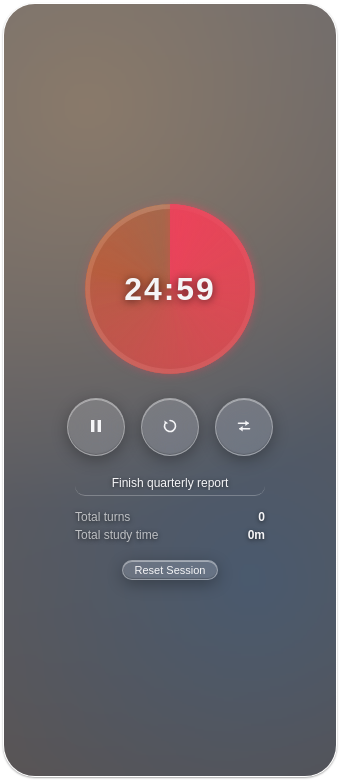
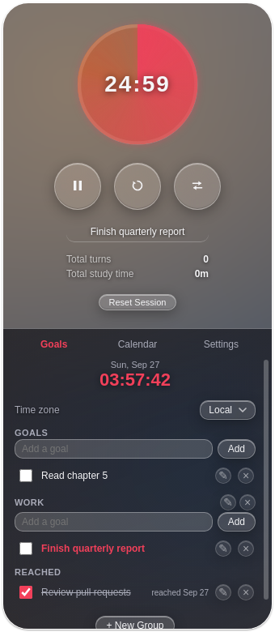
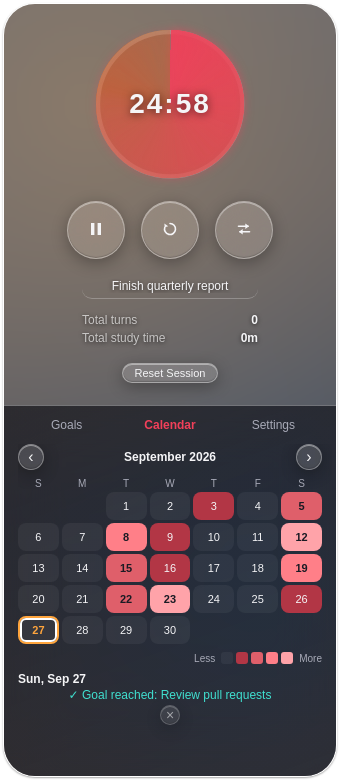
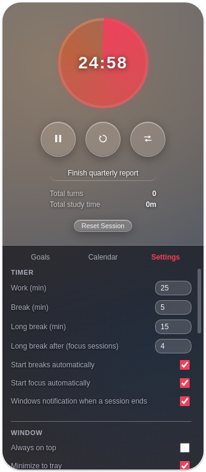

화면 한켠에 올려두는
뽀모도로 타이머
제목 표시줄 없이 둥근 모서리로 떠 있는 위젯 하나. 작업/휴식 타이머와 목표 관리, 달력 기록, 배경·색상 커스터마이징까지 담았습니다. 계정도 인터넷 연결도 필요 없고, 모든 기록은 이 PC에만 저장됩니다.
포터블 버전 · 압축 없이 바로 실행 · 로그인 불필요

타이머
목표(Goals)
달력(Calendar)
설정(Settings)기능 설명
필요한 만큼만, 화면을 가리지 않게
⏱️
작업 · 휴식 타이머
기본 25분/5분 뽀모도로. 값은 바로 저장되어 다음 실행에도 유지됩니다.
- 정해진 횟수마다 짧은 휴식 대신 긴 휴식
- 작업/휴식 자동 시작을 각각 켜고 끄기
- 일시정지 · 초기화 · 작업↔휴식 즉시 전환 버튼
- 실제 시계 기준으로 흐름 — 트레이로 보내거나 최소화해도 정확
- PC 절전 시 자동 일시정지
🎯
목표(Goals)
이번 집중 세션에서 할 일을 적어 두고, 달성 여부를 관리합니다.
- 그룹으로 묶어 관리, 그룹 생성 · 이름 변경 · 삭제
- 드래그 앤 드롭으로 순서 변경, 다른 그룹으로 이동
- 목표 · 그룹 모두 이름 변경 가능
- 맨 위 실시간 시계 — 시간대(UTC · KST 등) 선택 가능
📅
달력(Calendar)
날마다 집중한 시간을 색 농도로 보여주는 히트맵.
- 1시간 단위로 색이 진해지는 5단계 표시
- 날짜를 누르면 그날의 세션과 달성한 목표 목록
- 세션 메모 수정, 세션 · 목표 기록 삭제
- 모든 기록은 이 PC에만 저장 (외부 연결 없음)
🎨
꾸미기
리퀴드 글라스 디자인의 위젯을 취향대로.
- 배경 이미지 지정, 블러 · 틴트 색상/강도 조절
- 키 컬러(포인트 색) 선택 — 휴식은 항상 터콰이즈
- 게이지 모양: 꽉 찬 파이 또는 얇은 링
- 타이머 영역과 설정 패널의 높이 비율을 직접 조절
🔔
알림 · 트레이
집중/휴식이 끝나면 놓치지 않게 알려줍니다.
- Windows 알림 + 알람 소리, 확인 전까지 유지
- 시스템 트레이 아이콘, 최소화 · 닫기를 트레이로
- 작업표시줄 아이콘에 진행률 표시
🖥️
창 다루기
어디에도 방해되지 않는 작은 위젯.
- 제목 표시줄 없이 어디든 드래그로 이동
- 가장자리를 드래그해 크기 조절, 기본 크기로 되돌리기
- 전체화면 전환(더블클릭 또는 버튼), 크기 고정(Pin)
- 모니터 선택 후 네 모서리로 붙이기
🔒
계정도, 클라우드 동기화도, 자동 업데이트도 없습니다. 목표와 달력 기록은 이 PC의 사용자 데이터 폴더에만 저장되고, 외부 서버로 전송되지 않습니다.
다운로드
Windows 10 / 11 (64비트) · 포터블 버전 (설치 불필요)
⬇ 최신 버전 받기 (PomodoroTimer-Portable-*.exe)
⚠️ 코드 서명이 없어 처음 실행할 때 "Windows의 PC 보호" 창이 뜰 수
있습니다. 추가 정보 → 실행을 누르면 됩니다. 각
릴리즈에는 다운로드한 파일을 확인할 수 있는 SHA256 체크섬이 함께
제공됩니다.